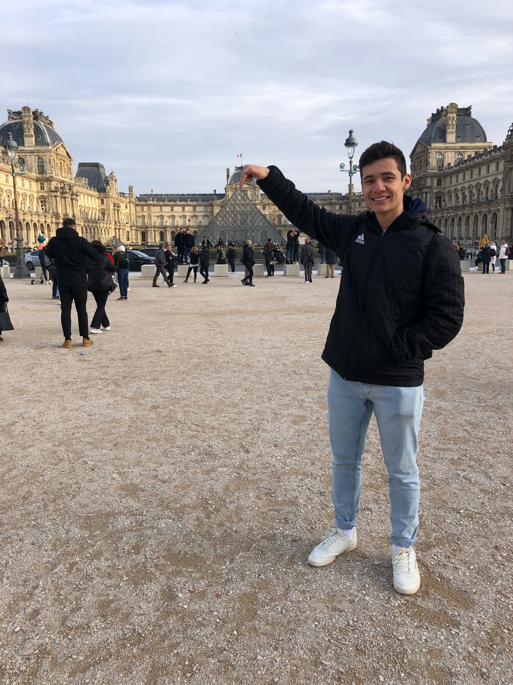

About me!
Hello! My name is Enrique Aviña, I am a rising junior studying computer science at MIT and I'm very interested in robotics, simulation, and public policy. I'm originally from Redwood City, California and have a twin brother (although we don't look all that alike). I love soccer, and have played on a team since I was 7, and love FIFA too! Scroll down to see some of my projects and hobbies!
Projects
Please enjoy these projects from my (very) outdated personal website
I am currently very interested in machine learning, and reinforcement learning in particular. I'd love to highlight one project. My freshman year, I worked with MIT's Aerospace Controls Laboratory to create an augmented reality platform for testing pedestrian-vehicle interactions". The repository can be found here. Essentially, pedestrians are rendered as holograms, and a real car tries to drive around them; the information is recorded and used to train RL algorithms. Below is a gif of the space mapping capabilities of the Microsoft Hololens, the headset/AR platform used in this project.

I am currently trying to learn about investing and working on a Gym RL environment to derive short-term and long-term investment policies. I am also trying to learn more about multi-agent RL systems!
Interests
I love soccer! I've been playing since I was 7, although I only play for fun now occasionally. My twin brother and I have always been on the same team and is our favorite activity. I also love to play FIFA, the video game and am willing to play at any time.